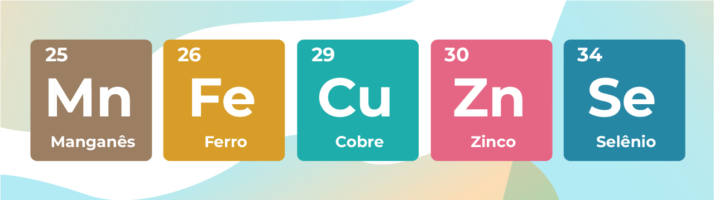
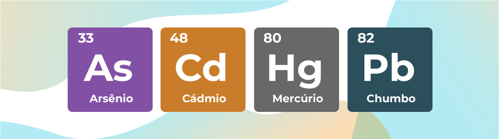
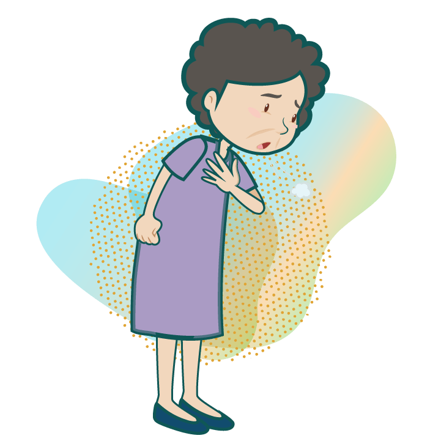
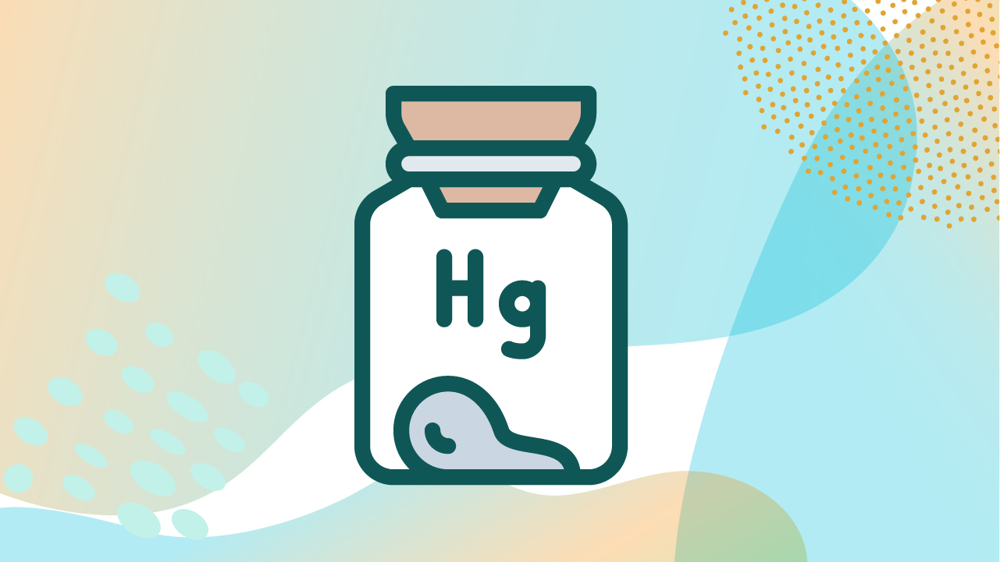

MÓDULO 3 | AULA 1 Toxicologia aplicada aos metais
Conceitos fundamentais e interações
O que é Toxicologia aplicada aos metais?
A toxicologia de metais é um campo especializado da toxicologia que se dedica ao estudo dos efeitos adversos causados por elementos metálicos e seus compostos em organismos vivos, incluindo seres humanos, animais e plantas. Esse ramo da ciência busca compreender como esses elementos interagem com os sistemas biológicos, quais mecanismos estão envolvidos na sua toxicidade, como ocorrem a exposição, absorção, distribuição, metabolização e excreção no organismo, além das possíveis consequências clínicas e ambientais associadas.
A toxicologia de metais tem, portanto, papel central na avaliação de riscos à saúde humana e ambiental, especialmente em contextos de contaminação por:
- atividades industriais
- mineração
- descarte inadequado de resíduos
- uso indiscriminado de fertilizantes e pesticidas
- consumo de alimentos contaminados
O conhecimento acumulado nesta área é fundamental para subsidiar ações de vigilância em saúde, formulação de políticas públicas, normatização de limites de exposição e implementação de estratégias de prevenção, diagnóstico e tratamento das intoxicações por metais.
Leia a matéria “Contaminação por metais pesados: riscos aos oceanos e à saúde humana” do Jornal da USP e entenda como os poluentes metálicos chegam ao ambiente marinho, seus efeitos toxicológicos e o impacto na saúde das populações expostas.
Classificação toxicológica dos metais
Os metais e seus compostos podem ser classificados de acordo com sua essencialidade biológica e seu potencial tóxico aos seres vivos, o que permite uma melhor compreensão dos riscos à saúde humana e ambiental. Essa classificação considera tanto a presença necessária de alguns metais para o funcionamento adequado do organismo quanto o risco associado ao seu excesso ou à presença de metais que não possuem qualquer função fisiológica reconhecida.
Metais essenciais
Metais essenciais, desempenham funções fundamentais no metabolismo celular e estão envolvidos em diversas funções fisiológicas. Confira os metais essenciais destacados abaixo:

Os metais essenciais atuam, por exemplo, como cofatores enzimáticos, ou seja, são necessários para a ativação de diversas enzimas que regulam reações bioquímicas essenciais. Também participam do transporte de oxigênio, da síntese de DNA e proteínas, da defesa antioxidante, entre outras funções vitais. Por exemplo, o ferro é essencial para a formação da hemoglobina e transporte de oxigênio, enquanto o zinco participa da replicação do DNA e da resposta imune.
No entanto, mesmo esses metais podem tornar-se tóxicos quando ingeridos ou acumulados em quantidades superiores às necessidades do organismo. O excesso de metais essenciais pode provocar a sua acumulação nos tecidos e, consequentemente, desequilíbrios no metabolismo, induzindo estresse oxidativo e inflamação, comprometendo a integridade celular e afetando diversos órgãos e sistemas, como o sistema nervoso, o fígado e os rins
Exemplo
A sobrecarga de ferro em pacientes com hemocromatose pode levar a lesões hepáticas, pancreáticas e cardíacas.
Metais Potencialmente Tóxicos
Metais potencialmente tóxicos possuem alguma função biológica em pequenas quantidades, sendo necessários em traços para o funcionamento adequado de certos processos metabólicos. Confira os metais abaixo:
No entanto, diferentemente dos metais essenciais clássicos, a faixa entre a dose benéfica e a tóxica é estreita, ou seja, facilmente podem se tornar tóxicos mesmo com pequenas elevações na exposição.
Quando em excesso, esses metais estão associados a efeitos adversos diversos, como neurotoxicidade (ex.: manganês em trabalhadores expostos a soldas industriais), hepatotoxicidade (ex.: cromo hexavalente em contaminantes industriais) e reações alérgicas ou irritativas (ex.: níquel em contato dérmico).
Exemplo
A exposição ocupacional ao manganês pode causar uma síndrome semelhante à Doença de Parkinson, conhecida como manganismo.
Metais tóxicos sem função biológica conhecida
Por outro lado, existem metais não essenciais, que não exercem qualquer função biológica conhecida nos organismos vivos e que são tóxicos mesmo em concentrações muito baixas. É o caso dos mentais a seguir:

Esses elementos são altamente perigosos, devido à sua capacidade de se acumular nos tecidos ao longo do tempo, em um processo chamado de bioacumulação, se ligar a proteínas celulares, atravessar barreiras biológicas como a placentária e a hematoencefálica, e interferir em processos bioquímicos fundamentais, provocando danos sistêmicos e efeitos crônicos mesmo em exposições de baixo nível. São frequentemente associados a efeitos neurotóxicos (alterações cognitivas, motoras e comportamentais), imunotóxicos (supressão da resposta imune), carcinogênicos, nefrotóxicos (efeitos renais, como disfunção tubular, proteinúria, insuficiência renal) e desregulação endócrina.
Exemplo
A ingestão crônica de arroz contaminado com arsênio em populações asiáticas está associada ao aumento da incidência de câncer de pele, pulmão e bexiga.
Essa classificação é útil para subsidiar ações de vigilância em saúde, monitoramento ambiental, definição de limites máximos de tolerância e a elaboração de estratégias clínicas de prevenção, diagnóstico e tratamento de intoxicações por metais. Além disso, contribui para a identificação de grupos de risco e para a formulação de políticas públicas baseadas em evidências.
Para aprofundar seus conhecimentos sobre metais e seus efeitos no organismo, confira os seguintes vídeos:
- Metais – Brasil Escola - Vídeo didático com explicações introdutórias sobre metais.
- Toxicologia de Metais - Videoaula com explicações acessíveis sobre bioacumulação e toxicocinética dos metais.
Principais Vias de Exposição a Metais
A via de exposição é um fator determinante na toxicocinética dos metais, ou seja, na forma como eles são absorvidos, distribuídos, metabolizados e excretados pelo organismo. As principais vias de exposição a metais em seres humanos são as inalatória, oral e dérmica. Cada uma delas apresenta particularidades quanto à taxa de absorção, tempo de resposta clínica e perfil toxicológico.
Via Inalatória

A exposição por inalação representa uma das vias mais importantes e frequentes de contato com metais tóxicos, especialmente em ambientes ocupacionais. Nesses locais, processos industriais e atividades específicas liberam no ar partículas metálicas finas, fumos, poeiras e vapores que podem ser inalados diretamente pelos trabalhadores, alcançando rapidamente os pulmões e, consequentemente, a corrente sanguínea.
Por isso, o monitoramento ambiental, a implementação de medidas de controle de emissão e a utilização adequada de EPIs são importantes para proteger a saúde dos trabalhadores e reduzir os impactos ocupacionais da exposição a metais, assim como ações de educação em saúde e fiscalização de ambientes ocupacionais.
Entre as indústrias com maior potencial de exposição inalatória estão:
pan_tool_alt CliqueToque e arraste para passar os cartões
Exemplo
Trabalhadores de fundições podem inalar vapores de cádmio e apresentar sintomas de irritação pulmonar, além de efeitos renais crônicos.
- Assista a reportagem sobre a ''Cidade dos Meninos'', no Rio de Janeiro. A reportagem mostra os impactos da contaminação ambiental na cidade, onde a população convive com os efeitos do “pó de broca”, substância tóxica que contém metais e outros compostos perigosos.
Via Oral
A ingestão oral é a via mais comum de exposição ambiental e não ocupacional a metais, sendo a principal porta de entrada desses contaminantes para a população em geral. Ocorre principalmente por meio da ingestão de alimentos e água contaminados, que acumulam metais provenientes de fontes naturais, atividades industriais, agrícolas e descargas urbanas. Além disso, outras formas menos frequentes, como a prática de geofagia (consumo intencional de terra ou argila), o uso de medicamentos contaminados e a manipulação de utensílios domésticos com componentes metálicos inadequados, também contribuem para a exposição oral.
pan_tool_alt CliqueToque e arraste para passar os cartões
Absorção pelo trato gastrointestinal:
A absorção do metal pelo organismo via oral varia de acordo com:

Alguns metais são mais prontamente absorvidos (ex.: mercúrio orgânico), enquanto outros têm absorção intestinal limitada.
Deficiências de minerais essenciais, como ferro, cálcio e zinco, aumentam a absorção de metais tóxicos, pois o organismo tenta compensar a falta desses elementos essenciais.
Crianças apresentam maior absorção intestinal de metais como o chumbo devido à maior permeabilidade intestinal e processos metabólicos em desenvolvimento, o que as torna mais vulneráveis aos efeitos tóxicos.
Efeitos adversos decorrentes da ingestão oral:
A ingestão de metais pode causar desde intoxicações agudas, com sintomas como náuseas, vômitos e dor abdominal, até efeitos crônicos e cumulativos, como:
- Bioacumulação: acumulação progressiva de metais nos tecidos, levando a disfunções celulares e orgânicas.
- Alterações gastrointestinais: irritação da mucosa, úlceras e distúrbios digestivos.
- Comprometimento neurológico: déficits cognitivos, neuropatias e transtornos do desenvolvimento.
- Lesões hepáticas e renais: danos à função de fígado e rins, órgãos responsáveis pela detoxificação e excreção.
- Risco aumentado de câncer: alguns metais, como arsênio, são reconhecidos agentes carcinogênicos.
- Assista ao vídeo do canal do Professor Poiato - Comida Contaminada? Bioacumulação e Metais Pesados na Sua Mesa!. O conteúdo apresenta, de forma acessível, como ocorre a bioacumulação de metais nos alimentos e seus possíveis impactos à saúde.
Via Dérmica
A exposição dérmica ocorre quando compostos metálicos entram em contato direto com a pele, sendo uma via de exposição mais comum em contextos laborais ou no uso de cosméticos e produtos pessoais contaminados. Apesar de, em geral, a pele ser uma barreira física eficaz, impedindo a entrada de muitas substâncias, alguns metais e suas formas químicas específicas podem ser absorvidos em quantidades suficientes para causar efeitos tóxicos.
Mecanismos e fatores que influenciam a absorção dérmica:
- Compostos lipofílicos: Metais que se associam a moléculas lipossolúveis, ou seja, que têm afinidade por gorduras, tendem a penetrar mais facilmente a barreira cutânea, ultrapassando a camada córnea.
- Formas ionizadas: Certas formas químicas de metais, especialmente em estados de oxidação específicos, podem atravessar a pele mais facilmente, dependendo do pH e da integridade da barreira cutânea.
- Estado da pele: A presença de lesões, cortes, dermatites ou abrasões facilita a penetração dos metais, tornando a absorção mais rápida e em maior quantidade.
- Condições ambientais: A sudorese intensa, o calor e a umidade aumentam a permeabilidade da pele, favorecendo a absorção.
- Tempo e frequência de contato: O uso prolongado ou repetido de produtos contendo metais pode levar a uma absorção cumulativa, aumentando o risco de toxicidade.
Exemplos de metais com absorção dérmica relevante:
pan_tool_alt Clique Toque nas imagens para visualizar as informações.
Efeitos adversos decorrentes da exposição dérmica a metais:
- Dermatite de contato irritativa: Reação inflamatória local causada pelo efeito químico direto do metal na pele, manifestando-se como vermelhidão, coceira e descamação.
- Dermatite de contato alérgica: Reação imunológica mediada por hipersensibilidade do tipo IV, que pode se manifestar mesmo após exposição muito pequena ao alérgeno (níquel é um dos agentes mais comuns).
- Efeitos sistêmicos: Embora raros pela via dérmica, podem ocorrer em exposições prolongadas, com sintomas relacionados à toxicidade do metal específico.
- Assista ao vídeo do canal Jornal Segurito - Exposição a contaminantes químicos por via dérmica. O vídeo explica, de maneira prática, como ocorre a absorção cutânea de agentes químicos e os fatores que influenciam esse tipo de exposição.
Mecanismos de Toxicidade
Os metais tóxicos interferem em diversos processos celulares e fisiológicos fundamentais para o funcionamento saudável dos organismos vivos. A toxicidade que esses metais exercem não é uniforme e depende de vários fatores químicos e biológicos, que determinam a forma como o metal interage com as células, tecidos e órgãos.
Principais fatores que influenciam a toxicidade dos metais:
A toxicidade de um metal varia significativamente conforme sua forma química. Por exemplo, o mercúrio pode estar presente como mercúrio elementar, inorgânico ou orgânico (metilmercúrio), sendo o metilmercúrio muito mais tóxico devido à sua maior capacidade de penetração celular e acumulação nos tecidos. Da mesma forma, o cromo trivalente (Cr³⁺) tem menor toxicidade comparado ao cromo hexavalente (Cr⁶⁺), que é altamente reativo e cancerígeno.
Metais solúveis em água ou em fluidos biológicos são geralmente mais facilmente absorvidos e distribuídos pelo organismo, podendo alcançar tecidos sensíveis com maior facilidade. Metais menos solúveis tendem a permanecer localizados em determinados órgãos ou tecidos, podendo causar danos específicos. Por exemplo, sais solúveis de cádmio podem ser absorvidos no trato gastrointestinal, enquanto formas insolúveis podem ter menor biodisponibilidade.
O estado de oxidação do metal influencia sua reatividade química. Metais em estados de oxidação mais elevados geralmente são mais reativos e, portanto, potencialmente mais tóxicos, pois podem participar de reações redox que geram radicais livres e dano oxidativo. A valência também determina a afinidade do metal por grupos funcionais de biomoléculas.
Alguns metais tóxicos competem com metais essenciais por sítios de ligação em enzimas e proteínas transportadoras, interferindo diretamente no metabolismo celular. Por exemplo, o cádmio (Cd) pode competir com o zinco (Zn), prejudicando enzimas dependentes de Zn, como metaloproteínas antioxidantes. Isto pode levar à redução da atividade enzimática, inibição da síntese de proteínas, e disfunções hormonais e imunológicas.
Certos metais têm uma alta afinidade por certos grupos químicos presentes em proteínas, DNA, lipídios e outras moléculas celulares. Essa afinidade permite , por exemplo, que eles se liguem a grupos sulfidrilas (-SH) presentes nas cadeias laterais da cisteína, um aminoácido comum em proteínas, assim como fosfatos, aminas e carboxilas, alterando a estrutura e função dessas biomoléculas essenciais. Essa ligação pode inativar enzimas, comprometer a integridade da membrana celular e interferir na sinalização celular.
Alguns metais promovem a geração de espécies reativas de oxigênio e outros radicais livres, causando estresse oxidativo, um estado de desequilíbrio entre espécies reativas e a capacidade antioxidante do organismo. O estresse oxidativo danifica lipídios, proteínas e ácidos nucléicos, levando à disfunção celular, morte programada (apoptose) e mutações genéticas. Além disso, metais podem interferir em processos de reparo celular e sistemas antioxidantes naturais, potencializando os danos, como, por exemplo, inflamação celular crônica, dentre outros.
Alguns metais interferem diretamente na cadeia de transporte de elétrons mitocondrial, inibem enzimas da fosforilação oxidativa ou induzem a abertura do poro de transição da membrana mitocondrial. Como resultado, ocorre diminuição na produção de ATP, energia essencial à célula, e ativação de vias de morte celular programada (apoptose), levando a lesões celulares irreversíveis, necrose tecidual, neurodegeneração e falência orgânica.
Crianças e gestantes são particularmente susceptíveis, já que órgãos em desenvolvimento (como o cérebro) são mais sensíveis aos efeitos neurotóxicos de metais como chumbo e mercúrio.
Deficiências em nutrientes essenciais (cálcio, ferro, zinco) podem aumentar a absorção de metais tóxicos, amplificando seus efeitos adversos. Por outro lado, dietas balanceadas podem oferecer proteção parcial.
Polimorfismos genéticos e diferenças na função renal, hepática e enzimática podem alterar a absorção, metabolismo e excreção de metais, modulando a susceptibilidade individual.
Interações com outros metais ou poluentes químicos podem aumentar ou reduzir a toxicidade de cada elemento, dependendo do mecanismo de ação.
Inclui fatores biológicos, como idade, sexo, estado de saúde, doenças preexistentes, e fatores sociais, como condições de vida, acesso à saúde, educação e rede de apoio, que podem influenciar a capacidade de prevenção, detecção e resposta aos efeitos tóxicos. A susceptibilidade explica por que indivíduos ou grupos em condições socioeconômicas desfavoráveis frequentemente apresentam efeitos mais graves frente à mesma exposição ambiental.
Esses fatores combinados determinam o perfil toxicológico específico de cada metal, influenciando o tipo de dano e a gravidade dos efeitos. Portanto, o entendimento detalhado das características químicas e bioquímicas dos metais é fundamental para a avaliação do risco toxicológico e para o desenvolvimento de estratégias eficazes de prevenção e tratamento.
- Assista ao vídeo no canal da Andreia Torres - Efeitos deletérios do mercúrio no organismo. A autora explica, de forma clara, como o mercúrio afeta diferentes sistemas do corpo humano, destacando mecanismos de toxicidade, sintomas e riscos associados à exposição.